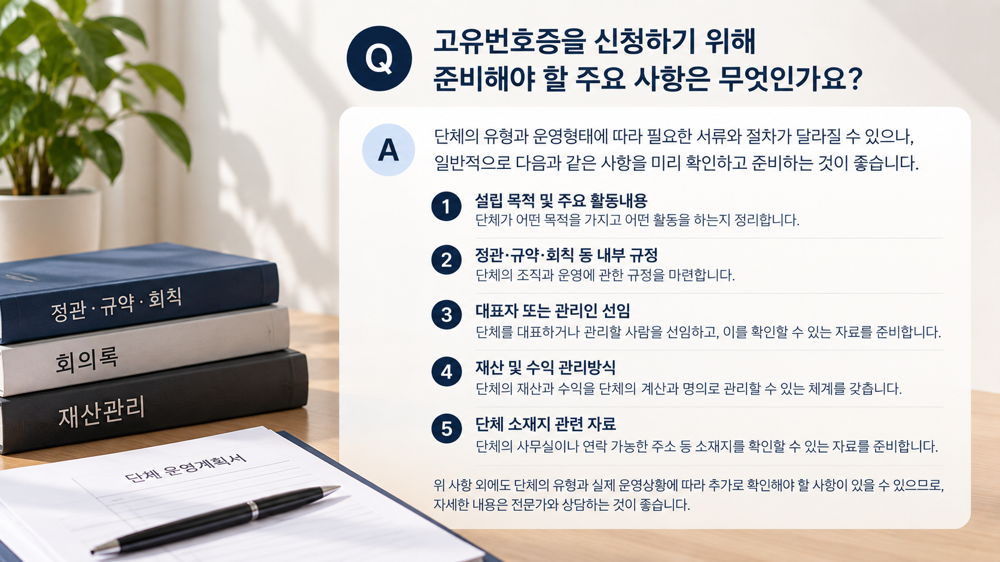
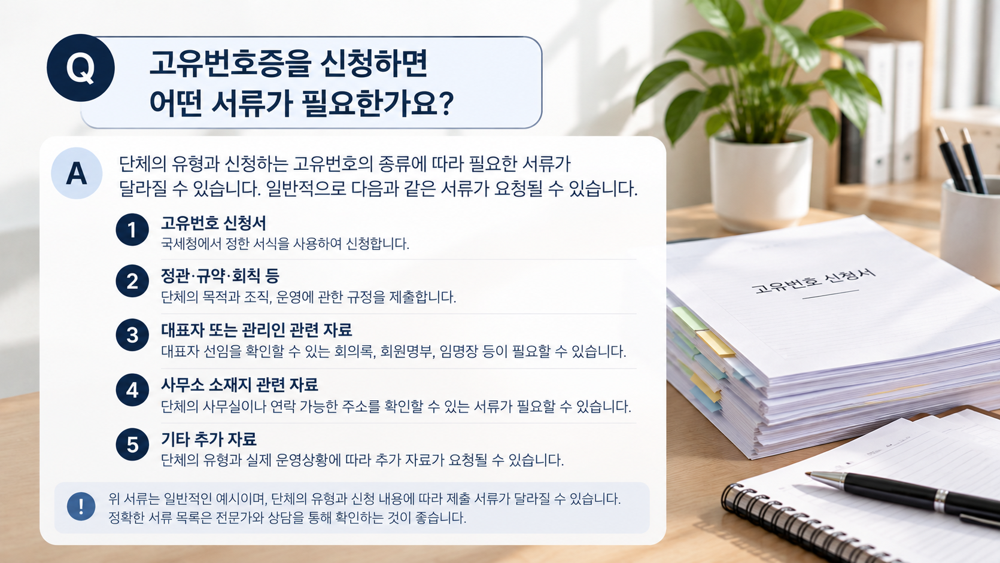

01. 고유번호란 무엇인가요?
법인격이 없는 단체도 세무상 관리 등을 위해 고유번호를 부여받는 경우가 있습니다.
그러나 고유번호를 부여받았다고 해서 해당 단체가 법인으로 설립되는 것은 아닙니다. 또한 고유번호증과 영리사업을 위한 사업자등록증도 같은 의미가 아닙니다.
먼저 확인하세요
단체가 실제로 어떤 목적으로 활동하는지, 수익사업을 하는지, 재산과 수익을 어떻게 관리하는지 등에 따라 필요한 세무절차가 달라질 수 있습니다.
02. 어떤 단체가 신청할 수 있나요?
협회·동호회·종중 등 법인격이 없는 단체가 일정한 조직을 갖추어 활동하면서 고유번호가 필요한 경우 신청을 검토할 수 있습니다.
중요한 것은 단체의 명칭보다 실제 조직과 운영형태입니다. 같은 ‘협회’라는 이름을 사용하더라도 운영방식에 따라 세법상 취급이 달라질 수 있습니다.
03. 신청 전에 확인해야 할 핵심사항
| 확인사항 | 주요 내용 |
|---|---|
| 설립 목적 | 단체의 목적과 주요 활동내용 |
| 조직 규정 | 정관·규약·회칙 등 운영규정 |
| 대표자 | 대표자 또는 관리인의 선임 여부 |
| 재산·수익 | 단체 재산과 수익의 관리방식 |
| 소재지 | 단체의 주사무소 또는 활동 근거지 |
특히 「법인으로 보는 단체」의 승인을 신청하는 경우에는 법에서 정한 별도의 요건을 갖추어야 하므로 단체의 실제 운영상황을 함께 확인해야 합니다.

04. 법인으로 보는 단체의 주요 승인요건
법인 아닌 단체 중 일정한 요건을 갖추어 관할 세무서장의 승인을 받으면 세법상 「법인으로 보는 단체」로 취급될 수 있습니다.
- 조직과 운영에 관한 규정을 가지고 대표자 또는 관리인을 선임하고 있을 것
- 단체 자신의 계산과 명의로 수익과 재산을 독립적으로 소유·관리할 것
- 단체의 수익을 구성원에게 분배하지 않을 것
※ 위 내용은 「국세기본법」 제13조에 따른 법인으로 보는 단체의 승인요건을 요약한 것입니다.
05. 어떤 서류를 준비하나요?
구체적인 제출서류는 단체의 유형과 신청내용에 따라 달라질 수 있습니다. 일반적으로 다음과 같은 자료를 확인하게 됩니다.
- 고유번호 또는 관련 승인 신청서
- 정관·규약·회칙 등 조직과 운영에 관한 규정
- 대표자 또는 관리인의 선임을 확인할 수 있는 자료
- 대표자 신분 확인자료
- 단체 소재지를 확인할 수 있는 자료
- 그 밖에 단체의 유형과 운영내용을 확인하기 위한 자료
대표자 선임자료나 소재지 관련 자료는 단체의 실제 상황에 따라 필요한 형태가 달라질 수 있으므로 신청 전에 확인하는 것이 좋습니다.

06. 신청 절차는 어떻게 진행되나요?
단체의 유형을 확인한 뒤 필요한 자료를 준비하여 관할 세무서에 신청하는 방식으로 진행됩니다.
※ 법인으로 보는 단체의 승인신청은 별도의 승인절차가 적용됩니다.
07. 고유번호증과 사업자등록증은 다릅니다
고유번호는 법인격이 없는 단체 등의 세무상 관리를 위해 부여되는 번호로 활용될 수 있지만, 영리 목적의 사업을 하기 위한 사업자등록과는 구분됩니다.
따라서 단체가 실제로 수익사업을 계획하고 있다면 단순히 고유번호를 신청하는 것으로 충분한지, 별도의 사업자등록이 필요한지를 함께 검토해야 합니다.
실무상 주의할 점
‘비영리단체니까 고유번호만 받으면 된다’고 단순하게 판단하기보다는 실제 활동내용과 수익구조를 기준으로 확인하는 것이 중요합니다.
08. 신청 전에 체크해 보세요
- 단체의 설립 목적과 주요 활동이 정리되어 있는가?
- 정관·규약·회칙 등 운영규정이 마련되어 있는가?
- 대표자 또는 관리인이 적법하게 선임되어 있는가?
- 단체의 재산과 수익을 어떤 방식으로 관리하는가?
- 수익을 구성원에게 분배하는 구조인지 확인했는가?
- 단체의 소재지를 확인할 수 있는가?
이러한 사항을 미리 확인하면 단체의 유형을 판단하고 필요한 신청절차를 정리하는 데 도움이 됩니다.
우리 단체도 고유번호를 받을 수 있을까요?
간단한 자가진단으로 먼저 확인하거나 행정사사무소 참에 상담을 신청해 주세요.